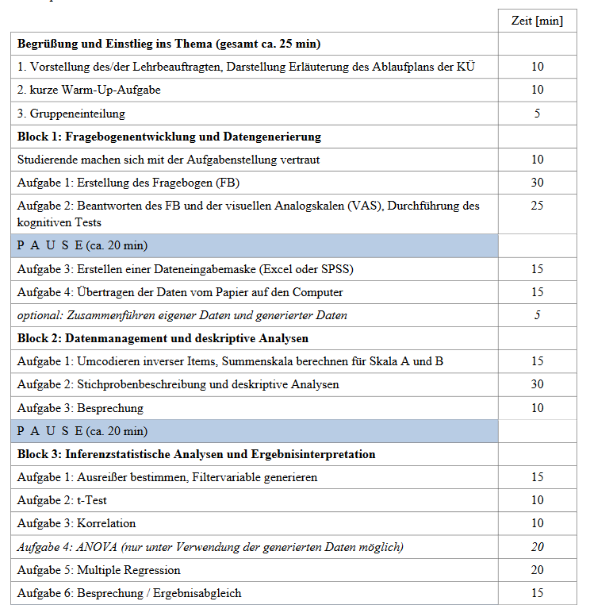
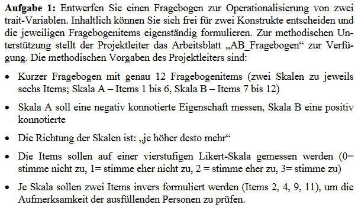
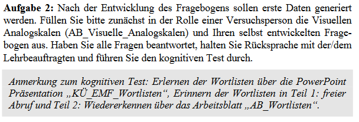
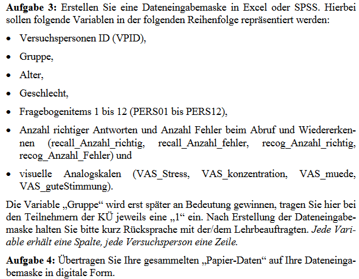
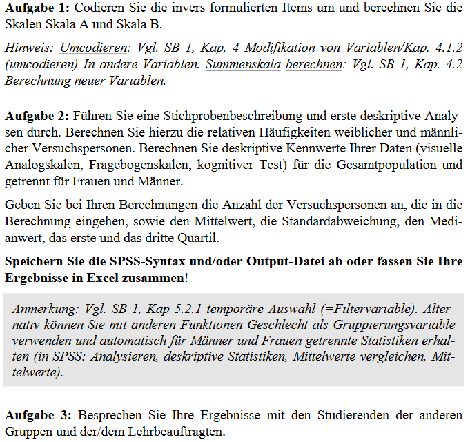
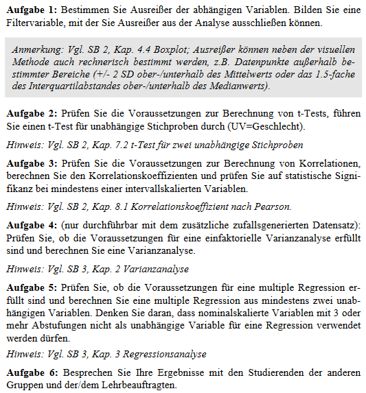
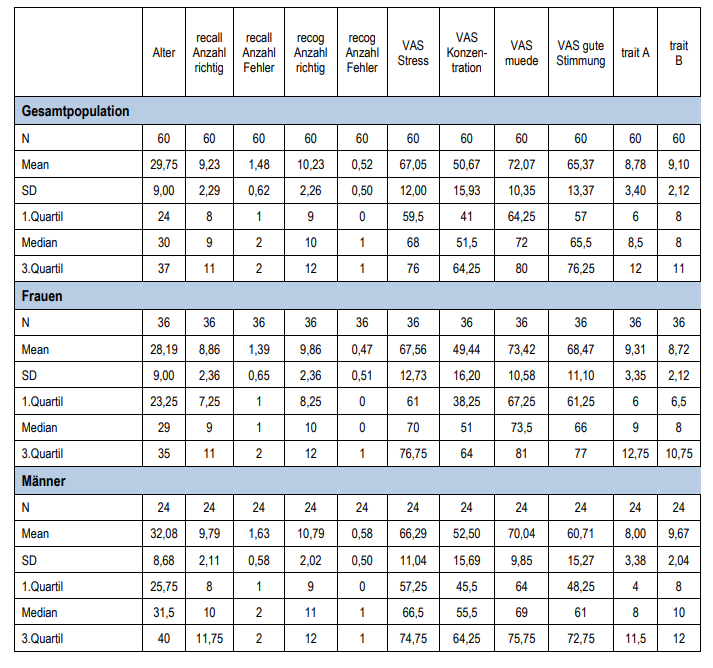

Komplexe Übung — Aufgabenstellungen
Einführung und Kennenlernen
Heute geht es um das Gedächtnis \(\ra\) Warmup / Ice-breaker:
- Rufen Sie sich subjektiv wichtige / interessante Dinge aus dem Bereich “empirische Forschung”” ins Gedächtnis und erzählen Sie uns etwas darüber
2-minütiges Brainstorming: überlegen Sie sich stichpunktartig, welche Aspekte der empirischen Forschung Ihnen in Erinnerung geblieben sind
Vorlesungen zur Statistik, Dokumentarfilme, Zeitungsartikel
Bildzeitung, Instagram, Podcasts, Interviews
Berufliche Erfahrungen, Gespräche mit Freunden
Ablauf – Überblick
Einteilung in Gruppen von 3–4 Personen – Breakoutrooms
mindestens eine Person SPSS – hilfreich ist eine weitere Person mit Excel
Bearbeitung von Aufgaben in Gruppenarbeit nach eigenem Tempo
Pausen nach Gefühl und Tempo in Ihrer Gruppe – frei wählbar
Studienbriefe selbstverständlich benutzen!
Bei Fragen: benachrichtigen Sie mich und ich komme dann in das Breakoutroom
Definition aktive Teilnahme: Sie nehmen ja bereits aktiv teilgenommen :)
Definition sachkundige Teilnahme: Sie sind sicherlich sachkundig und haben die Studienbriefe aufmerksam gelesen :)
Bitte geben Sie sich in Ihrem eigenen Interesse (mögliche Abschlussarbeit mit empirischem Anteil / Fragestellung) trotzdem Mühe !!!
Ablauf – Details

Fallstudie
Als studentische Arbeitsgruppe unterstützen Sie ein größeres Forscherteam
Forschungsprojekt: Funktion des verbalen Gedächtnisses
Besonderes Interesse: Einflussfaktoren auf das verbale Gedächtnis herausfinden!!
mögliche Einflussfaktoren:
TRAIT-Variablen – mögliche direkte oder indirekte Einflüsse auf das verbale Gedächtnis, die in der Person begründet sind wie z. B. Persönlichkeits- oder Charaktereigenschaften (Aufgabe 1)
STATE-Variablen – aktuelles Stresserleben, Konzentrationsfähigkeit, Müdigkeit und Befindlichkeit (Aufgabe 2 \(\ra\) Visuelle Analogskalen)
Beispiele: Alter, Geschlecht, Kohorte u. ä. Meta-Variablen
Start: Entwickeln eines kleinen Mini-Fragebogens (Block I) ⇒ Erfassen möglicher Einflüsse auf das verbale Gedächtnis
Ziel: Deskriptive (Block II) und Inferenzanalyse (Block III) dieser Einflussfaktoren auf die verbale Gedächtnisleistung!!
Aufgabenblock I – Fragebogenentwicklung / Datengenerierung
Aufgabe 1
- mögliche direkte oder indirekte Einflüsse auf das verbale Gedächtnis, die in der Person begründet sind wie z. B. Persönlichkeits- oder Charaktereigenschaften:
- Aufmerksamkeitsdefizit (neg. konnotiert) oder Sprachkompetenz (pos. konnotiert)

Aufgabe 2

Hilfreich:
nutzen Sie z. B. Excel, um die Antworten auf die Fragen pro Gruppenteilnehmer:in tabellenartig zu erfassen (alternativ für Mac-User: natürlich andere Software möglich)
sowohl eigene Trait-Variablen (Aufgabe 1) als auch eigene State-Variablen (visuelle Analogskalen) beantworten und erfassen
danach: Rücksprache mit Lehrperson für den gemeinsamen kognitiven Test \(\ra\) empirische Erfassung der abhängigen Variable “Gedächtnisleistung”
Aufgabe 3 und 4

Anmerkung: am besten in Excel erstellen und dann in SPSS einfügen!!!
Aufgabenblock II – Datenmanagement und deskriptive Analysen
Einleitung
- Ihre Forschergruppe hat Daten aus drei weiteren Teilprojekten zusammengetragen. Aufgrund der hohen Stichprobengröße (N = 60) entscheiden Sie sich dafür, für weitere Analysen erstmal nur die neuen Daten aus den drei Teilprojekten Zentrum X, Zentrum Y und Zentrum Z zusammen zu analysieren (und Ihre eigenen Daten später hinzuzuschalten).
- Die drei zusätzlichen Teilprojekte umfassen Versuchspersonen (Psychologiestudierende) aus drei Studienzentren X, Y und Z. Die Versuchspersonen, die an den Studienzentren Y und Z rekrutiert wurden, wiesen keine offensichtlichen außergewöhnlichen Eigenschaften auf. Die Proband:innen aus Studienzentrum X wurden aus wissenschaftlichen Hilfskräften des Schlaflabors rekrutiert, die zum Zeitpunkt der Datenerhebung gerade eine Nachtschicht hinter sich gebracht haben …
- Nach der erfolgreichen Datenerhebung und Datenübertragung Ihrer Daten erfolgt nun der Schritt der Bildung der Skalen Ihres Trait-Fragebogens. Zur reinen Berechnung von Skalenwerten wird häufig ein Summenwert der Fragebogenitems gebildet. Allerdings wurden zwei Items je Skala invers formuliert. Damit ein sinnvoller Summenwert gebildet werden kann, müssen die invers formulierten Items umcodiert werden!
Aufgaben 1 – 3

Aufgabenblock III – Inferenzstatistische Analysen und Ergebnisinterpretation
Einleitung
- Nach erfolgreicher Berechnung deskriptiver Kennwerte folgt nun das Kernstück einer empirischen Forschungsarbeit: die inferenzstatistischen Analysen
- Überlegen Sie, vor dem Hintergrund der Forschungsfrage (Analysen der Determinanten der Gedächtnisleistung), welche Variablen hier als abhängige Variablen in Frage kommen! Hinweis: insgesamt 4 Möglichkeiten!
- Beschränken Sie sich bei Ihren Analysen zunächst auf eine abhängige Variable, z. B. Anzahl korrekter Antworten im kognitiven Test.
- Wenn Sie nach Berechnung der unten stehenden Aufgaben noch genügend Zeit zur Verfügung haben, können Sie weitere Analysen, gerne auch mit einem anderen Fokus, weiteren abhängigen oder unabhängigen Variablen durchführen
- Speichern Sie die SPSS-Syntax und/oder Output-Datei ab oder fassen Sie Ihre Ergebnisse in Excel zusammen!
Aufgaben 1 – 6

Deskriptive Analysen – Lösung
